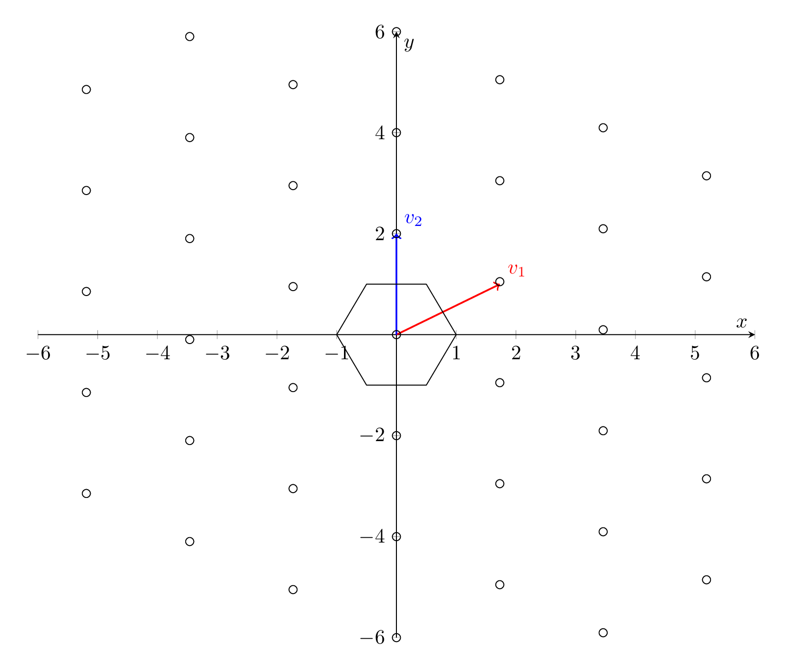

\documentclass[tikz,border=3.14mm]{standalone}
\usepackage{pgfplots}
\pgfplotsset{compat=1.16}
\pgfplotsset{width=5.5in,compat=1.10}
\begin{document}
\begin{tikzpicture}
\begin{axis}[axis lines=middle,
xmin=-6, xmax=6,
ymin=-6,ymax=6,
xlabel = $x$,
ylabel = $y$]
\addplot [->, thick, red]
coordinates { (0,0) (sqrt(3),1)} node[above right,pos=1] {$v_1$};
\addplot [->, thick, blue]
coordinates { (0,0) (0,2)} node[above right,pos=1] {$v_2$};
\addplot+ [mark=none,black] table {
0.5 1
-0.5 1
-1 0
-0.5 -1
0.5 -1
1 0
0.5 1
};
\pgfplotsinvokeforeach{-6,-4,...,6}{
\addplot[only marks, mark=o, samples
at={-5.19,-3.46,-1.73,0,1.73,3.46,5.19}]{-0.55*x + #1};}
\end{axis}
\end{tikzpicture}
\end{document}Created by David Li